Viena, Austria
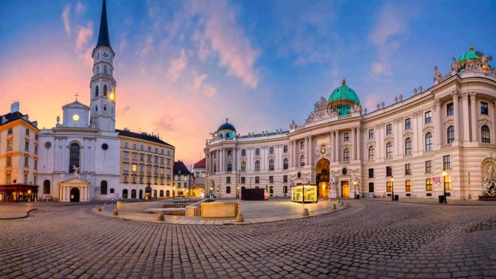
Ciudad imperial con museos y música clásica a cada paso. El Palacio de Schönbrunn y la Ringstrasse condensan el barroco y el historicismo, mientras cafés como Demel mantienen la tradición pastelera. Ideal para caminar entre parques y teatros de ópera.
Brujas, Bélgica

Centro medieval perfectamente conservado, canales bordeados de árboles y plazas adoquinadas como el Markt. Campanarios, casas gremiales y chocolaterías crean un ambiente de cuento que invita a perderse sin prisa.
Copenhague, Dinamarca
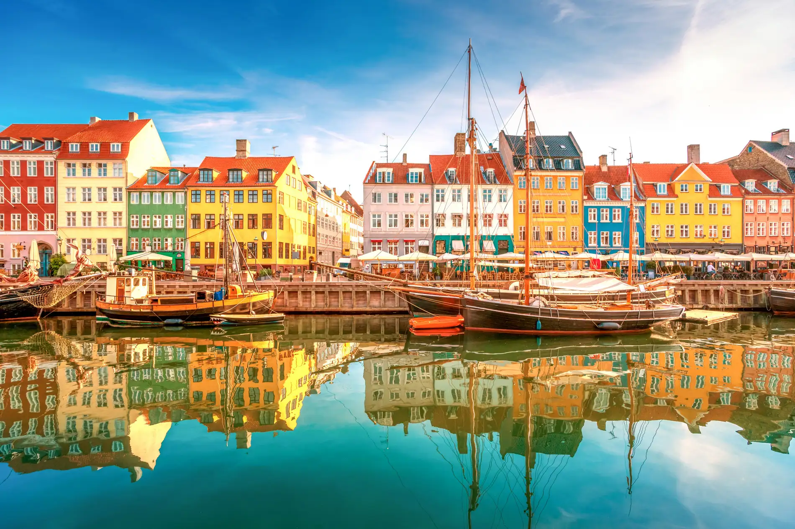
Equilibrio entre diseño contemporáneo y tradición nórdica. Nyhavn, Tívoli y barrios ciclistas muestran una ciudad humana y acogedora; gastronomía de vanguardia y respeto por el espacio público.
Luibliana, Eslovenia
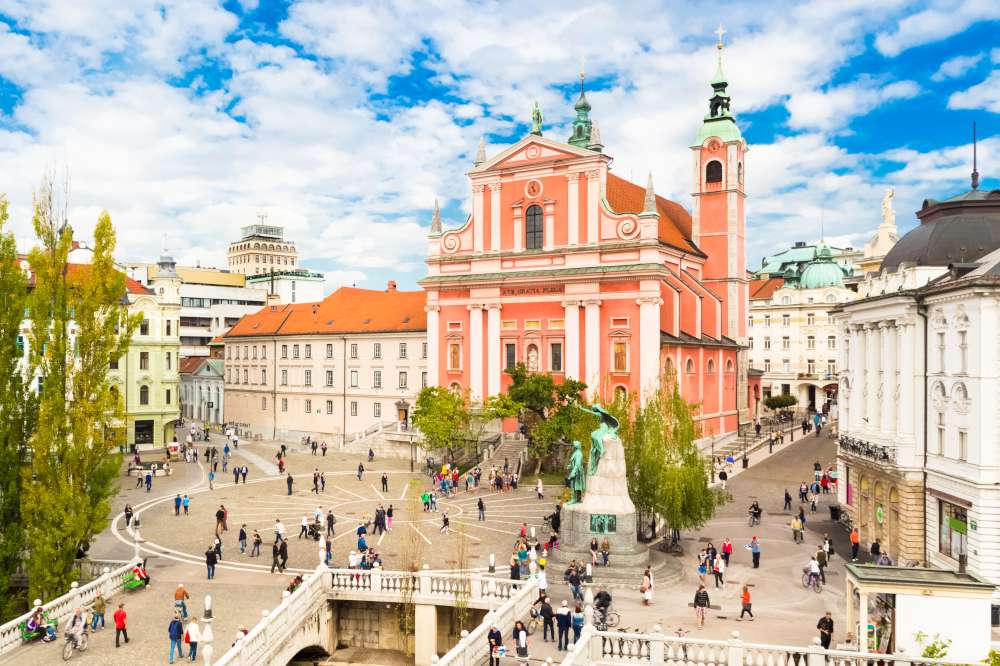
Capital pequeña y escénica, con casco peatonal, cafés junto al río y el castillo en lo alto. Base ideal para excursiones al lago Bled y los Alpes Julianos.
Barcelona, España

Modernismo de Gaudí, mar y montaña en un mismo plano. La Sagrada Familia, Park Güell y la vida de barrio conviven con mercados y museos; paseos desde Montjuïc a las playas.
Sevilla, España

Casco histórico monumental, patios y azulejos. El Alcázar, la Catedral y el barrio de Santa Cruz se suman a una potente cultura de tapas y al flamenco.
Tallin, Estonia
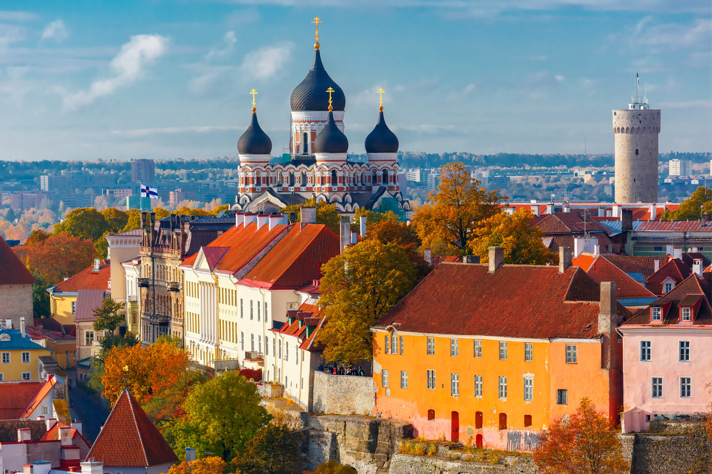
Ciudad vieja medieval amurallada, torres y tejados de colores con vistas al Báltico. Invierno frío, pero fotogénico desde Toompea.
París, Francia

Romance urbano: Sena, bulevares y museos icónicos. Barrios con identidad propia y cafés a pie de calle; Notre Dame, Sacré-Coeur y la Torre Eiffel como hitos imprescindibles.
Budapest, Hungría

Arquitectura Art Nouveau, baños termales y paseos nocturnos sobre el Danubio. El Parlamento brilla al caer la tarde desde el Puente de las Cadenas.
Florencia, Italia

Cuna del Renacimiento: Duomo, Uffizi y artesanías en el Oltrarno. Una ciudad-museo viva donde cada calle guarda esculturas, palacios y talleres.
Roma, Italia

La “Ciudad Eterna” combina ruinas clásicas, plazas barrocas y vida de barrio. Del Panteón a la Fontana di Trevi, la historia convive con trattorias y terrazas.
Venecia, Italia
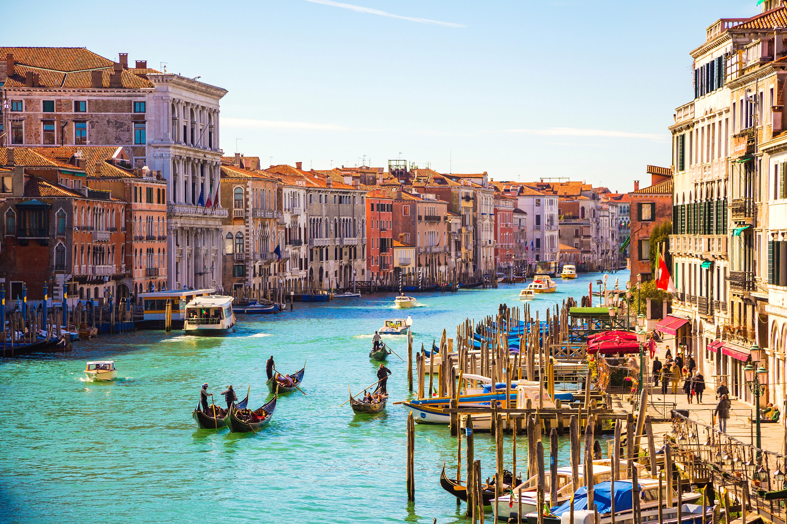
Sin coches y con un trazado acuático único. Canales, palacios y puentes conectan islas; desde San Marcos a los barrios más tranquilos, es pura contemplación.
La Valeta, Malta
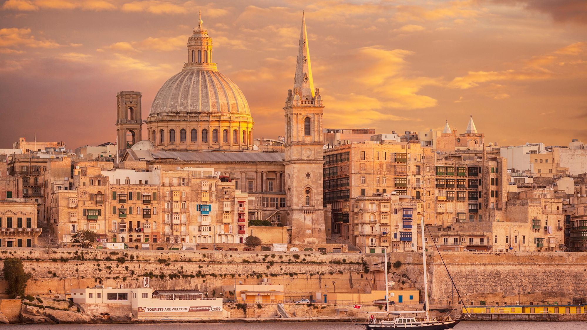
Fortificada y barroca, con miradores al Gran Puerto. Palacios, iglesias y museos concentrados en un casco compacto y caminable.
Bergen, Noruega
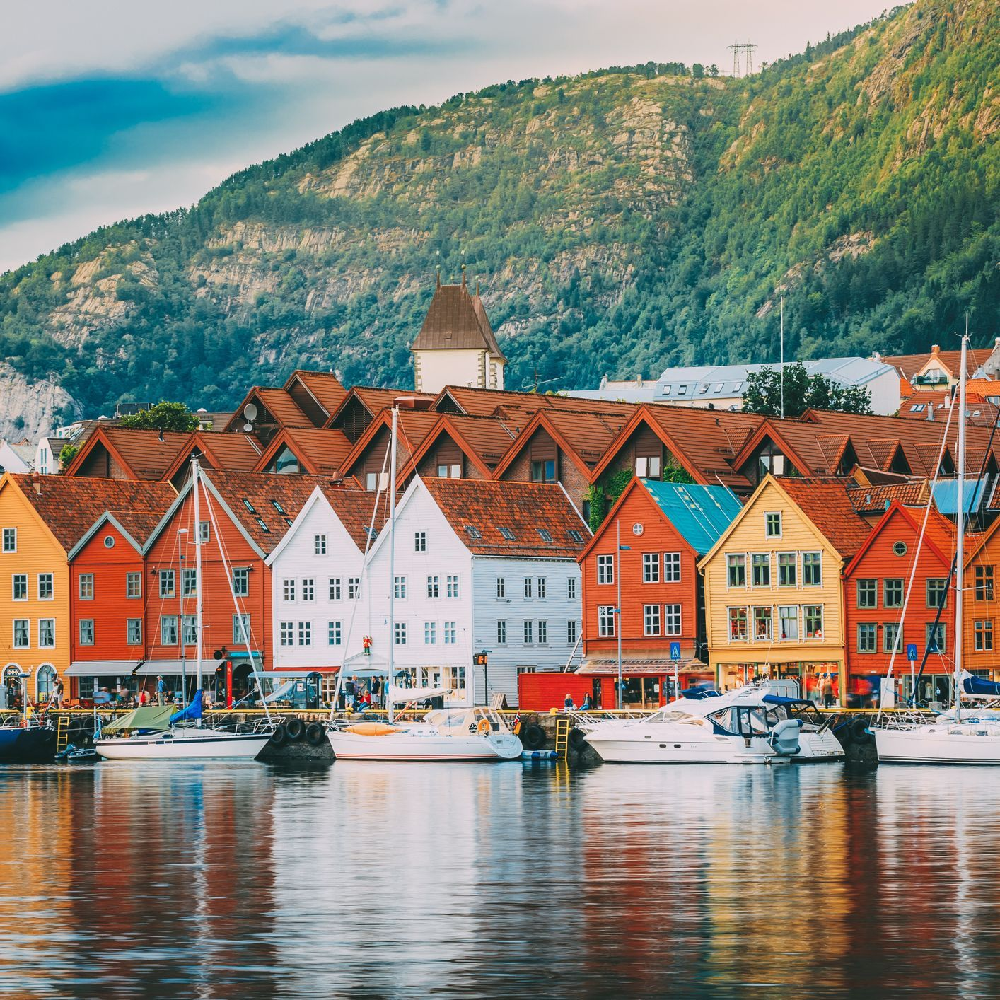
Casas de madera en Bryggen, puerto vivo y montañas que caen a fiordos. Punto de partida perfecto para rutas escénicas.
Ámsterdam, Paises Bajos

Canales Patrimonio de la UNESCO, gables estrechos y cultura ciclista. Museos de primer nivel y barrios verdes conectados por puentes.
Oporto, Portugal
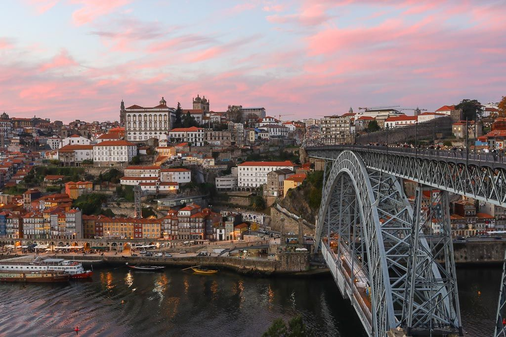
Azulejos, puentes sobre el Duero y bodegas de vino de Oporto. Librería Lello y piscinas de Leça como iconos contemporáneos.
Londres, Reino Unido
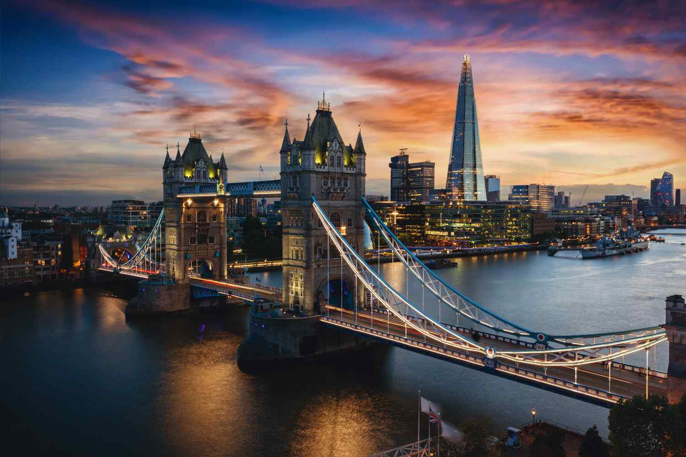
Historia y vanguardia a orillas del Támesis. Museos gratuitos, parques inmensos y una escena cultural y gastronómica inagotable.
Edimburgo, Reino Unido

Royal Mile, castillo y colinas verdes. La roca volcánica de Arthur’s Seat regala una panorámica excepcional sobre la ciudad de piedra.
Praga, República Checa
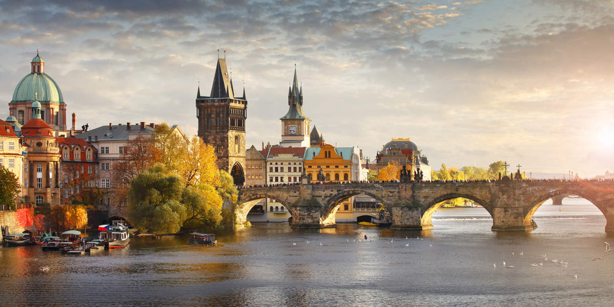
Cúpulas y torres góticas sobre un casco antiguo fotogénico. Puente de Carlos al amanecer y cafés históricos con música y literatura.
Lucerna, Suiza
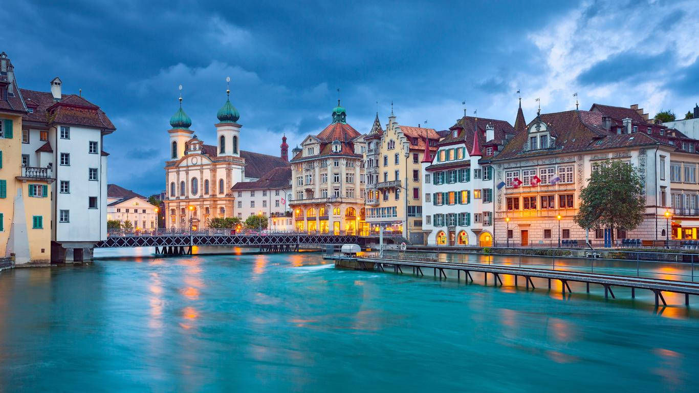
Lago, montes cercanos y el Kapellbrücke como postal. Tejados medievales y aire alpino a pocos minutos de rutas de montaña.
Zurich, Suiza

Casco antiguo elegante junto al lago, museos, galerías y vida junto al agua. Veranos vibrantes y eficiencia suiza en cada detalle.
Reikiavik, Islandia

Arquitectura moderna como Harpa y Hallgrímskirkja entre paisajes volcánicos. Base para auroras y baños termales cercanos.
Beijing, China
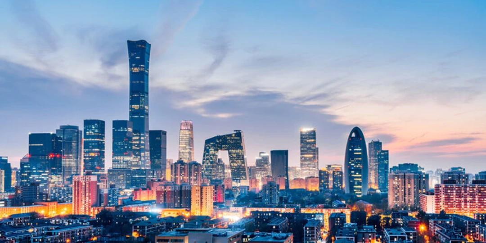
Capital imperial con la Ciudad Prohibida, hutongs y avenidas amplias. Puerta a tramos cercanos de la Gran Muralla y a una cocina regional riquísima.
Hong Kong, China

Horizonte denso en torno a un puerto lleno de ferris. Montañas, islas y reservas naturales a minutos del centro financiero.
Seúl, Corea del Sur

Rascacielos y palacios, mercados nocturnos y una red de metro impecable. Distritos como Bukchon y Myeongdong muestran tradición y moda.
Jaipur, India
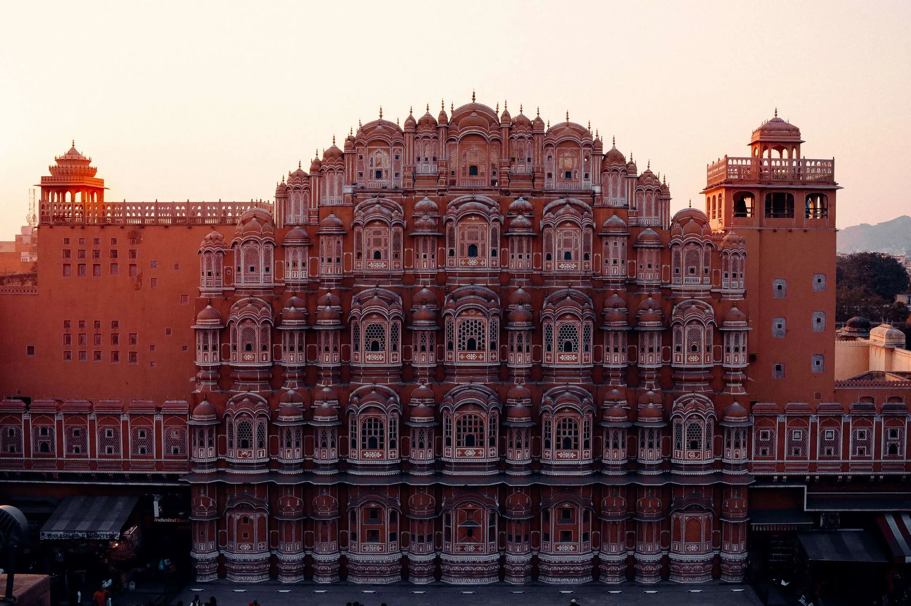
La “Ciudad Rosa”: Hawa Mahal, fuertes y bazares color salmón. Artesanías, joyería y gastronomía del Rajastán en palacios y calles.
Kioto, Japón
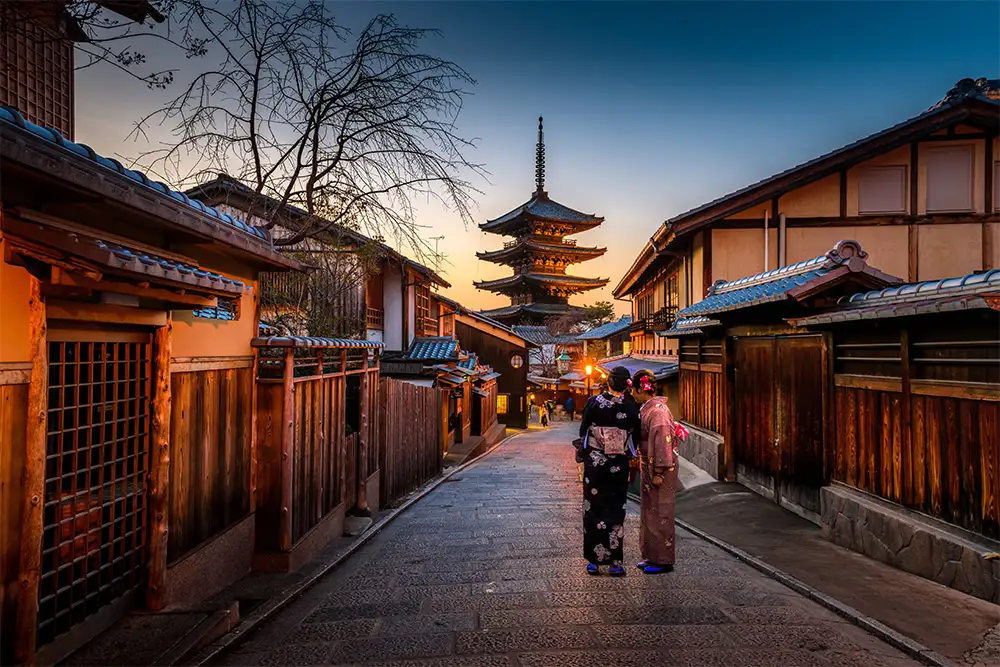
Templos, santuarios y jardines clásicos. Hanami en primavera, rutas arboladas y posibilidad de cruzarse con geishas en Gion.
Luang Prabang, Laos
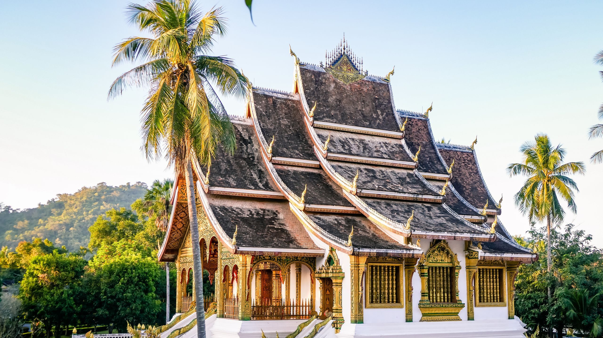
Patrimonio UNESCO junto a la confluencia de ríos. Procesiones de monjes al amanecer, cascadas cercanas y arquitectura colonial-budista.
Beirut, Líbano
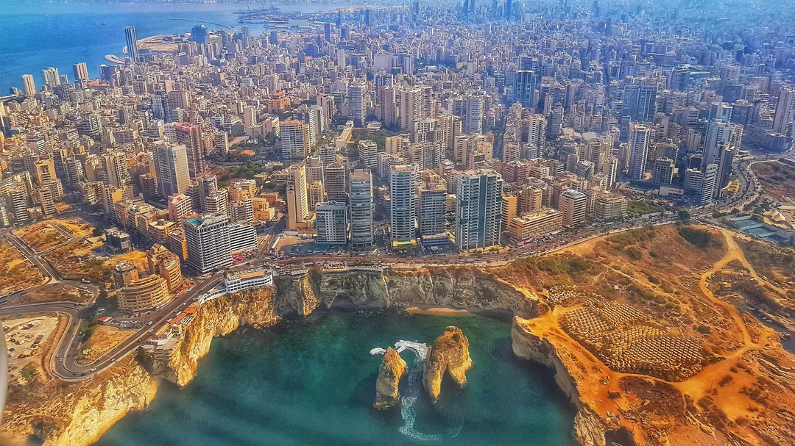
Playas, clubes y azoteas frente a mezquitas y zocos históricos. Gastronomía y vida nocturna con aire mediterráneo y levantino.
Mascate, Omán

Bahías y montañas enmarcando mezquitas, zocos y fuertes portugueses. Paseos costeros y arquitectura blanca junto al Golfo de Omán.
Doha, Qatar

Corniche con skyline futurista, Souq Waqif y el Museo de Arte Islámico de I. M. Pei. Mezcla de tradición y nuevas áreas culturales.
Chiang Mai, Tailandia
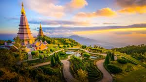
Templos en la ladera, cafés y mercados creativos. Punto de partida para naturaleza del norte y experiencias culinarias intensas.
Hanoi, Vietnam

Lagos, templos y barrio francés con aire romántico. Calles angostas con cafés tradicionales y mercados vibrantes.
Singapur, Singapur
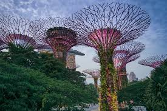
Ciudad-jardín con selva urbana, Jardín Botánico y Gardens by the Bay. Templos, casas patrimoniales y una logística impecable para moverse.
Ciudad de Quebec, Canadá
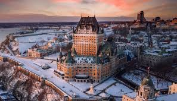
Casco amurallado en altura con vistas al San Lorenzo. Ambiente europeo, tejados empinados y puestas de sol rosadas.
Nueva York, Estados Unidos

Arquitectura icónica, parques como Central Park y una escena artística incomparable. Energía urbana que no se apaga.
San Francisco, Estados Unidos

Puente Golden Gate, colinas y casas victorianas. Museos de talla mundial y barrios con carácter propio.
San Miguel de Allende, México
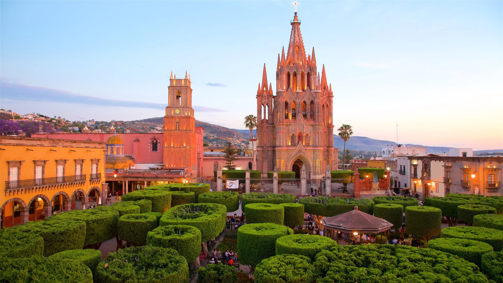
Centro colonial con parroquia neogótica rosada. Calles adoquinadas, patios y arte en galerías y talleres.